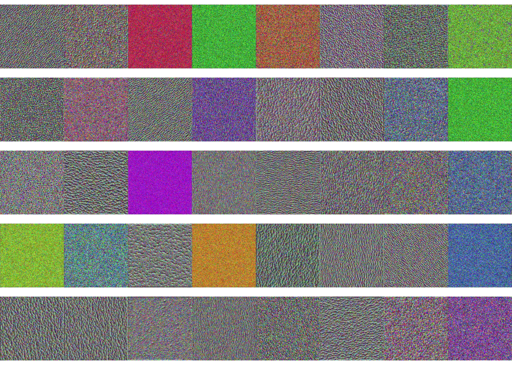
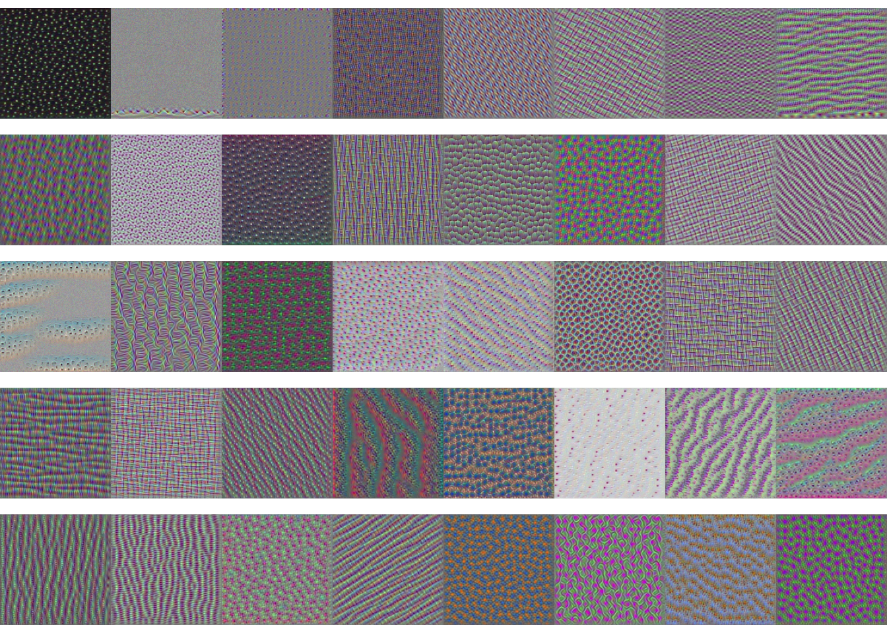

library("dplyr")
library("purrr")
library("keras")
library("tensorflow")Optimizing Feature Maps
Interpreting neurons by finding optimal inputs
So far, we’ve visualized neural networks by analyzing the activations of learned features across observed samples. A complementary approach is to ask instead — is there a hypothetical image that would maximize the activation of a particular neuron? If we can construct such an image, then we might have a better sense of the types of image concepts to which a neuron is highly sensitive.
We will illustrate these ideas on a network that has been trained on Imagenet. This is a large image dataset with many (thousands of) class labels, and it is often used to evaluate image classification algorithms. The network is loaded below.
model <- application_vgg16(weights = "imagenet", include_top = FALSE)- The main idea is to setup an optimization problem that searches through image space for an image that maximizes the activation for a particular neuron. The function below computes the average activation of a one of the feature maps. The goal is to find an image that maximizes this value for a given feature.
mean_activation <- function(image, layer, ix=1) {
h <- layer(image)
k_mean(h[,,, ix])
}- To implement this, we can compute the gradient of a neuron’s average activation with respect to input image pixel values. This is a measure of how much the activation would change when individual pixel values are perturbed. The function below moves an input image in the direction of steepest ascent for the
mean_activationfunction above.
gradient_step <- function(image, layer, ix=1, lr=1e-3) {
with(tf$GradientTape() %as% tape, {
tape$watch(image)
objective <- mean_activation(image, layer, ix)
})
grad <- tape$gradient(objective, image)
image <- image + lr * grad
}
- Once these gradients can be computed, it’s possible to perform gradient ascent to solve the activation maximization problem. This ascent is encoded by the function below. We initialize with a random uniform image and then take
n_itergradient steps in the direction that maximizes the activation of featureix.
random_image <- function() {
tf$random$uniform(map(c(1, 150, 150, 3), as.integer))
}
gradient_ascent <- function(layer, ix = 1, n_iter = 100, lr = 10) {
im_seq <- array(0, dim = c(n_iter, 150, 150, 3))
image <- random_image()
for (i in seq_len(n_iter)) {
image <- gradient_step(image, layer, ix, lr)
im_seq[i,,,] <- as.array(image[1,,,])
}
im_seq
}
- Below, we visualize the images that optimize the activations for a few neurons in layer 3. These neurons seem to be most responsive particular colors and edge orientations.
squash <- function(x) {
(x - min(x)) / (max(x) - min(x))
}
par(mfrow = c(5, 8), mai = rep(0.00, 4))
activation_model <- keras_model(inputs = model$input, outputs = model$layers[[3]]$output)
for (i in seq_len(40)) {
im_seq <- gradient_ascent(activation_model, ix = i)
plot(as.raster(squash(im_seq[100,,,])))
}
We can think of these features as analogous to a collection of basis functions. At the first layer, the network is representing each image as a combination of basis images, related to particular color or edge patterns.
We can compare these activation maximizing inputs with those associated with later layers. It seems that the basis images at this level are more intricate, reflecting textures and common objects across this dataset. For example, the polka dot pattern may be strongly activated by cat eyes.
par(mfrow = c(5, 8), mai = rep(0.00, 4))
activation_model <- keras_model(inputs = model$input, outputs = model$layers[[8]]$output)
for (i in seq_len(40)) {
im_seq <- gradient_ascent(activation_model, ix = i)
plot(as.raster(squash(im_seq[100,,,])))
}